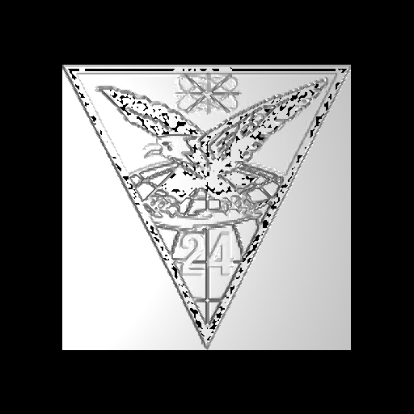

Displacement (DSP) map primitive
Creating a DSP object from miscellaneous images
We will use two examples to illustrate the next few sections.
1. A black and white (gray scale) image (png format):

with properties:
$ file Ex1.png
Ex1.png: PNG image, 142 x 150, 8-bit gray+alpha, non-interlaced
2. A color png file:
with properties:
$ file Ex2.png
Ex2.png: PNG image, 152 x 150, 8-bit/color RGBA, non-interlaced
Preparing your height field data
The DSP takes unsigned short (16-bit) integer data. Our various command-line data converters can help bring data in from pretty much any existing format, including image data, via various processing commands. If the data were in png image format, for example (which is basically 3-channel 8-bit integer data), the data could be prepared with a combination of 'png-pix', 'pix-bw', and 'cv'.
If you type the 'in' command, it will prompt you for each parameter individually and that should help some. For the DSP, the main parameters are: the source of the height data, the width (number of points in the X direction) and length (number of points in the Y direction) of the input data, width/length/height scaling factors, and whether to smoothly interpolate between cells (0 = do not interpolate, 1 = interpolate).
See the 'dsp_add' tool for combining two existing DSP data files into one.
A DSP primitive is an array of cells initially defined by points in the X-Y plane as positive heights from Z = 0. The DSP can then be transformed to other orientations and positions. The number of cells is (numX * numY).
The data format for the DSP primitive is network-ordered unsigned short integers (nu16). BRL-CAD has a couple of dozen tools that you can use for converting existing data into that raw format, such as the 'cv' command or the 'bw-d' and 'd-u' commands among other similar tool chains. If you use the cv command, the output format is "nus" for network unsigned shorts.
Using the two examples to convert the data to dsp format.
Example 1.
Convert it to a bw file (one pixel is one unsigned char):
$ png-bw Ex1.png > Ex1.bw
View the result:
$ bw-fb -w142 -n150 Ex1.bw
Convert it to the format required for a dsp file (nu16):
$ cv huc nu16 Ex1.bw Ex1.dsp
Example 2.
Convert it to a pix file (one pixel is defined by three unsigned chars):
$ png-pix Ex2.png > Ex2.pix
View the result:
$ pix-fb -w152 -n150 Ex2.pix
Convert it to a bw file (one pixel is one unsigned char):
$ pix-bw Ex2.pix > Ex2.bw
View the result:
$ bw-fb -w152 -n150 Ex2.bw
Convert it to the format required for a dsp file:
$ cv huc nu16 Ex2.bw Ex2.dsp
Importing DSP data into a .g file
Example 1.
In mged create a dsp object of width 142, length 150, no interpolation, cut direction 'ad', cell size 1 (in current units), and unit elevation 0.005 (in current units):
mged> in dsp1.s dsp f Ex1.dsp 142 150 0 ad 1 0.005
mged> r dsp1.r u dsp1.s
Example 2.
In mged create a dsp object:
mged> in dsp2.s dsp f Ex2.dsp 152 150 0 ad 1 0.005
mged> r dsp2.r u dsp2.s
Rendering your DSP
Example 1.
mged> B dsp1.r
mged> ae 270 90
mged> rt
You should see something like this:

You can play around with the scaling factors (the end pair: 1 - cell width, 0.005 - cell height) to improve the looks of the image.
But now let's invert the file so we get its negative:
$ bwmod -m-1 -a255 < Ex1.bw > Ex1n.bw
And make another dsp in the same manner as before:
$ cv huc nu16 Ex1n.bw Ex1n.dsp
$ ...
And see the results:
Example 2.
mged> B dsp2.r
mged> ae 270 90
mged> rt
You should see something like this:

Again, you could play with various parameters to get the desired look. You could also create the negative as we did with example 1 and see the results:

Creating a DSP object from manual or programmatic generation of data
A DSP object can be created manually or programmatically by creating an ASCII data file as input using the BRL-CAD utility asc2dsp to convert it directly to the DSP binary format. An easy way to create the input file for asc2dsp is to first create it row by row in natural form with the top row being the desired top row and so on in desired viewing order. Then take the finished file and filter it through the Unix utility tac which will reverse the order of the rows (lines).
A simple example
For example, let's create the letter "T" for viewing in the X-Y plane.
$ cat t-normal.asc
1 1 1 1 1
0 0 1 0 0
0 0 1 0 0
0 0 1 0 0
0 0 1 0 0
0 0 1 0 0
Now reverse the file:
$ tac t-normal.asc > t-reversed.asc
and see the result in perfect form for asc2dsp:
$ cat t-reversed.asc
0 0 1 0 0
0 0 1 0 0
0 0 1 0 0
0 0 1 0 0
0 0 1 0 0
1 1 1 1 1
Finally, create the dsp file:
$ asc2dsp t-reversed.asc t.dsp
(The TGM creation is left as an exercise for the reader.)
A practical example
Now let's consider a more practical example and a real test of BRL-CAD. We can import topological (topo) data and produce a realistic ground surface. There are many free sources of such data, but these, for US topo data, seem to be the most likely:
http://nationalmap.gov/viewer.html/
http://earthexplorer.usgs.gov/
Trying to find suitable topo data, in a desired format for a specific area, is not so easy there, so we located another source of topological data (digital elevation models [DEM]) in SDTS format:
http://data.geocomm.com/dem/demdownload.html
We selected Colorado, El Paso County, and Digital Elevation Models.
On that page we downloaded all six 10-meter data archive files for complete coverage of the county. We also downloaded the six *TXT files which contain metadata about each archive. [Note that you are required to have a Geo Community account for any downloads (membership is free).]
The six archive files are:
3818122.DEM.SDTS.TAR.GZ
4055020.DEM.SDTS.TAR.GZ
4055026.DEM.SDTS.TAR.GZ
4055028.DEM.SDTS.TAR.GZ
4055034.DEM.SDTS.TAR.GZ
4057865.DEM.SDTS.TAR.GZ
Taking the first archive as an example:
$ tar -tvzf 3818122.DEM.SDTS.TAR.GZ
we see that the archive files are not in a directory (but they are a set with possibly redundant file names found in other sets), so we create a directory for each:
$ mkdir 3818122.dem
...
Now move each archive into its own directory and unpack it:
$ mv 3818122.DEM.SDTS.TAR.GZ 3818122.dem
$ cd 3818122.dem
$ tar -xvzf 3818122.DEM.SDTS.TAR.GZ
3814CATD.DDF
3814CATS.DDF
3814CEL0.DDF
3814DDDF.DDF
3814DDOM.DDF
3814DDSH.DDF
3814DQAA.DDF
3814DQCG.DDF
3814DQHL.DDF
3814DQLC.DDF
3814DQPA.DDF
3814IDEN.DDF
3814IREF.DDF
3814LDEF.DDF
3814RSDF.DDF
3814SPDM.DDF
3814STAT.DDF
3814XREF.DDF
README
We can view the SDTS data files with a free viewer (for Windows only) available here:
http://www.visualizationsoftware.com/3dem
In order to manipulate the data in SDTS files we used the GDAL library and then created a C++ program called 'sdtsdem2asc' which can be found here:
https://github.com/tbrowder/brlcad-usgs-topo-tools
After building and installing that program, we can change directory to the desired data set and create the dsp. We enter the desired base name of the image (we choose the unique data set base name) and use the '--chop' option to minimize the dsp's vertical height to the default one meter below the lowest height in the data set. Note the program will do all the work for us with the options shown:
$ cd /path/to/3818122.dem
$ sdtsdem2asc 3814CATD.DDF --base=3818122 --chop
The resulting default png file (but cropped) is shown below.